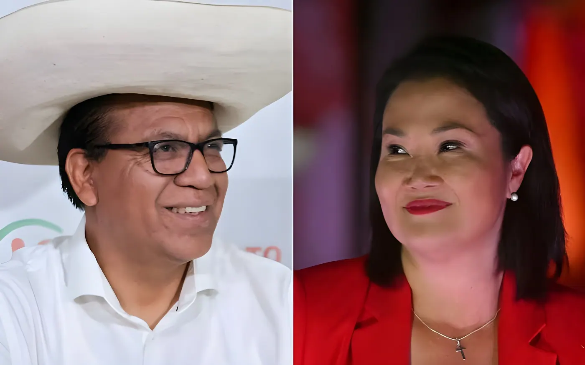

Le 7 juin 2026, les Péruviens ont voté pour désigner leur prochain président. Le duel opposait Keiko Fujimori, candidate de droite de Fuerza Popular, à Roberto Sánchez, candidat de gauche de Juntos por el Perú. Deux jours après le scrutin, aucun vainqueur n'a encore été proclamé : avec 96 % des bulletins dépouillés, Sánchez mène d'un souffle — 50,05 % contre 49,95 % — et quelque 450 000 votes contestés restent à arbitrer. Le Pérou est suspendu à un résultat qui pourrait ne pas être connu avant la fin juin.
Le second tour opposait, pour la quatrième fois consécutive pour Fujimori, deux candidatures que tout sépare — l'héritage politique, la base sociale, le projet économique — mais qui partagent le poids de fragilités judiciaires respectives. Environ 27,3 millions d'électeurs inscrits étaient appelés aux urnes, avec un taux de participation au premier tour de 73,8 %, dans un Pérou marqué par une instabilité politique chronique : huit présidents en dix ans depuis 2016.
La journée de vote s'est globalement déroulée sans incident majeur. Les premiers résultats partiels, dépouillés dès dimanche soir, plaçaient Fujimori en avance avec 52,6 % après 36 % des bulletins — des suffrages en provenance de Lima, son bastion traditionnel. Mais au fil du décompte, les votes des régions andines du sud ont progressivement réduit puis inversé cet écart au profit de Sánchez, reproduisant exactement la dynamique des précédents scrutins péruviens.
Premier tour : Fujimori arrive en tête avec ~17 %, Sánchez se qualifie 2e avec ~12 %, devançant López Aliaga de ~18 800 voix.
Dernier débat présidentiel : Fujimori défend la ligne dure contre la criminalité, Sánchez dénonce une « mafia politique » qui mine les institutions.
Second tour. Premiers résultats : Fujimori en tête à Lima (52,6 % après 36 %). Le décompte bascule progressivement en faveur de Sánchez avec l'arrivée des votes andins.
Sánchez passe en tête à 50,1 % après 95 % du dépouillement. Fujimori appelle au calme et promet de respecter le résultat final.
Le chef de l'ONPE annonce que le résultat final pourrait ne pas être connu avant deux semaines à fin juin, en raison des procès-verbaux contestés.
Date prévue d'investiture du prochain président, neuvième à diriger le Pérou en une décennie.
Le scrutin a une nouvelle fois révélé la coupure structurelle du Pérou en deux. Lima et la côte pacifique, prospères et tournées vers le commerce international, ont voté massivement Fujimori. Le sud andin rural et indigène — Cusco, Ayacucho, Puno —, marqué par une pauvreté persistante et le souvenir des violences post-Castillo, a plébiscité Sánchez. Cette géographie du vote n'est pas nouvelle : elle reproduit, trait pour trait, la fracturation observée lors du second tour de 2021 entre Castillo et Fujimori, et révèle des inégalités de développement que nul des huit présidents passés n'a su résorber.
Sánchez a fait campagne coiffé du chapeau paysan offert par Pedro Castillo — actuellement incarcéré après sa condamnation à onze ans et demi pour rébellion —, promettant une Assemblée constituante, la nationalisation des ressources naturelles et la libération de l'ancien président. Fujimori a misé sur la sécurité publique — 23 homicides pour 100 000 habitants à Lima en 2025, soit trois fois plus qu'en 2020 — en promettant de déployer l'armée aux côtés de la police et d'expulser les étrangers condamnés pour délits.
Avant qu'un vainqueur soit officiellement proclamé, le Jury national électoral (JNE) doit statuer sur des procès-verbaux contestés représentant quelque 450 000 votes. Ce mécanisme, prévu par la loi péruvienne, permet à chaque camp de signaler des irrégularités formelles dans les actes de dépouillement. En 2021, la même procédure avait duré plusieurs semaines et alimenté des accusations mutuelles de fraude. Le chef de l'ONPE, Bernardo Pachas, a indiqué que le processus pourrait prendre entre deux semaines et la fin du mois de juin.
L'écart provisoire d'environ 20 000 voix sur 450 000 contestées rend arithmétiquement possible un retournement de résultat. Les deux camps ont affiché leur sérénité publique — Fujimori appelant à la « patience et la sérénité », Sánchez se disant « très confiant et optimiste » —, mais les tensions dans les rues de Lima, où des milliers de partisans se sont rassemblés dans des quartiers opposés, indiquent que la période de l'entre-deux résultats sera éprouvante pour les institutions.
| Candidat | Score provisoire (96 %) | Base électorale |
|---|---|---|
| Roberto Sánchez | 50,05 % | Sud andin, zones rurales |
| Keiko Fujimori | 49,95 % | Lima, côte pacifique |
| Écart provisoire | ~20 000 voix | — |
| Votes contestés restants | ~450 000 | Arbitrage JNE |
| Résultat officiel attendu | Fin juin 2026 au plus tard | |
Quelle que soit l'issue du dépouillement, le Pérou affronte une situation d'une fragilité institutionnelle rare. Le vainqueur héritera d'un Parlement sans majorité claire, d'une défiance populaire envers les élites et d'une économie dont le sol pesolera est sensible aux incertitudes politiques — le dollar avait déjà bondi au-dessus de 3,45 soles à l'annonce du duel Fujimori-Sánchez. La semaine ou les semaines qui viennent détermineront non seulement le nom du prochain président, mais la capacité des institutions péruviennes à traverser une nouvelle transition sans que la rue ne s'embrase avant même que le verdict des urnes ne soit rendu.
El 7 de junio de 2026, los peruanos acudieron a las urnas para elegir a su próximo presidente. El duelo enfrentaba a Keiko Fujimori, candidata de derecha de Fuerza Popular, y a Roberto Sánchez, candidato de izquierda de Juntos por el Perú. Dos días después del escrutinio, ningún ganador ha sido proclamado aún: con el 96 % de los votos escrutados, Sánchez lidera por un margen muy estrecho — 50,05 % frente a 49,95 % — y unos 450 000 votos impugnados siguen pendientes de resolución. El Perú aguarda un resultado que podría no conocerse antes de finales de junio.
La segunda vuelta enfrentaba, por cuarta vez consecutiva para Fujimori, a dos candidaturas que todo separa — la herencia política, la base social, el proyecto económico — pero que comparten el peso de fragilidades judiciales respectivas. Cerca de 27,3 millones de electores inscritos estaban llamados a las urnas, con una tasa de participación del 73,8 % en la primera vuelta, en un Perú marcado por una inestabilidad política crónica : ocho presidentes en diez años desde 2016.
Los primeros resultados parciales, escrutados desde el domingo por la noche, situaban a Fujimori en cabeza con el 52,6 % tras el 36 % de los votos — sufragios procedentes de Lima, su bastión tradicional. Pero a medida que avanzaba el recuento, los votos de las regiones andinas del sur fueron reduciendo y luego invirtiendo esa ventaja a favor de Sánchez, reproduciendo exactamente la dinámica observada en los anteriores comicios peruanos.
Primera vuelta: Fujimori llega primera con ~17 %, Sánchez se clasifica 2.º con ~12 %, superando a López Aliaga por ~18 800 votos.
Último debate presidencial: Fujimori defiende la línea dura contra la criminalidad, Sánchez denuncia una «mafia política» que mina las instituciones.
Segunda vuelta. Primeros resultados: Fujimori lidera en Lima (52,6 % tras el 36 %). El escrutinio vira progresivamente a favor de Sánchez con la llegada de los votos andinos.
Sánchez pasa a la cabeza con el 50,1 % tras el 95 % del escrutinio. Fujimori llama a la calma y promete respetar el resultado final.
El jefe de la ONPE anuncia que el resultado final podría no conocerse hasta dos semanas o finales de junio, por las actas impugnadas.
Fecha prevista de investidura del próximo presidente, noveno en dirigir el Perú en una década.
El escrutinio reveló una vez más la división estructural del Perú en dos. Lima y la costa del Pacífico, prósperas y orientadas hacia el comercio internacional, votaron masivamente por Fujimori. El sur andino rural e indígena — Cusco, Ayacucho, Puno —, marcado por una pobreza persistente y el recuerdo de la represión post-Castillo, se decantó por Sánchez. Esta geografía del voto no es nueva: reproduce, rasgo a rasgo, la fractura observada en la segunda vuelta de 2021 entre Castillo y Fujimori, y revela desigualdades de desarrollo que ninguno de los ocho presidentes anteriores ha conseguido reducir.
Sánchez hizo campaña tocado con el sombrero campesino ofrecido por Pedro Castillo — actualmente encarcelado tras su condena a once años y medio por rebelión —, prometiendo una Asamblea constituyente, la nacionalización de los recursos naturales y la liberación del expresidente. Fujimori apostó por la seguridad pública — 23 homicidios por 100 000 habitantes en Lima en 2025, tres veces más que en 2020 — prometiendo desplegar el ejército junto a la policía y expulsar a los extranjeros condenados por delitos.
Antes de que se proclame oficialmente un ganador, el Jurado Nacional de Elecciones (JNE) debe resolver las actas impugnadas que representan unos 450 000 votos. Este mecanismo, previsto por la ley peruana, permite a cada bando señalar irregularidades formales en las actas de escrutinio. En 2021, el mismo procedimiento duró varias semanas y alimentó acusaciones mutuas de fraude. El jefe de la ONPE, Bernardo Pachas, indicó que el proceso podría prolongarse entre dos semanas y finales de junio.
La diferencia provisional de unos 20 000 votos sobre 450 000 impugnados hace aritméticamente posible un vuelco en el resultado. Ambos bandos mostraron serenidad en público — Fujimori pidiendo «paciencia y serenidad», Sánchez declarándose «muy confiado y optimista» —, pero las tensiones en las calles de Lima, donde miles de simpatizantes se congregaron en barrios opuestos, indican que el período de entre-resultados será una prueba para las instituciones.
| Candidato | Resultado provisional (96 %) | Base electoral |
|---|---|---|
| Roberto Sánchez | 50,05 % | Sur andino, zonas rurales |
| Keiko Fujimori | 49,95 % | Lima, costa del Pacífico |
| Diferencia provisional | ~20 000 votos | — |
| Votos impugnados restantes | ~450 000 | Arbitraje JNE |
| Resultado oficial previsto | Finales de junio 2026 | |
Sea cual sea el desenlace del escrutinio, el Perú afronta una situación de fragilidad institucional infrecuente. El vencedor heredará un Parlamento sin mayoría clara, una desconfianza popular hacia las élites y una economía cuyo tipo de cambio es sensible a las incertidumbres políticas — el dólar ya había superado los 3,45 soles al anunciarse el duelo Fujimori-Sánchez. Las semanas que vienen determinarán no solo el nombre del próximo presidente, sino la capacidad de las instituciones peruanas para atravesar una nueva transición sin que la calle se incendie antes de que las urnas hayan emitido su veredicto definitivo.